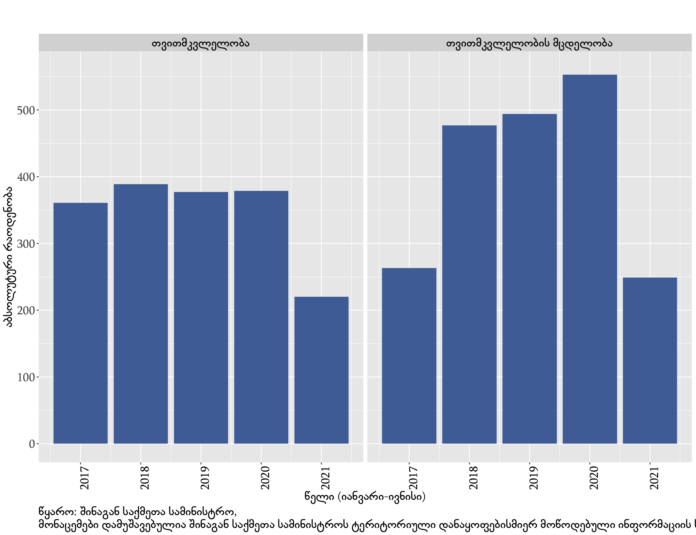
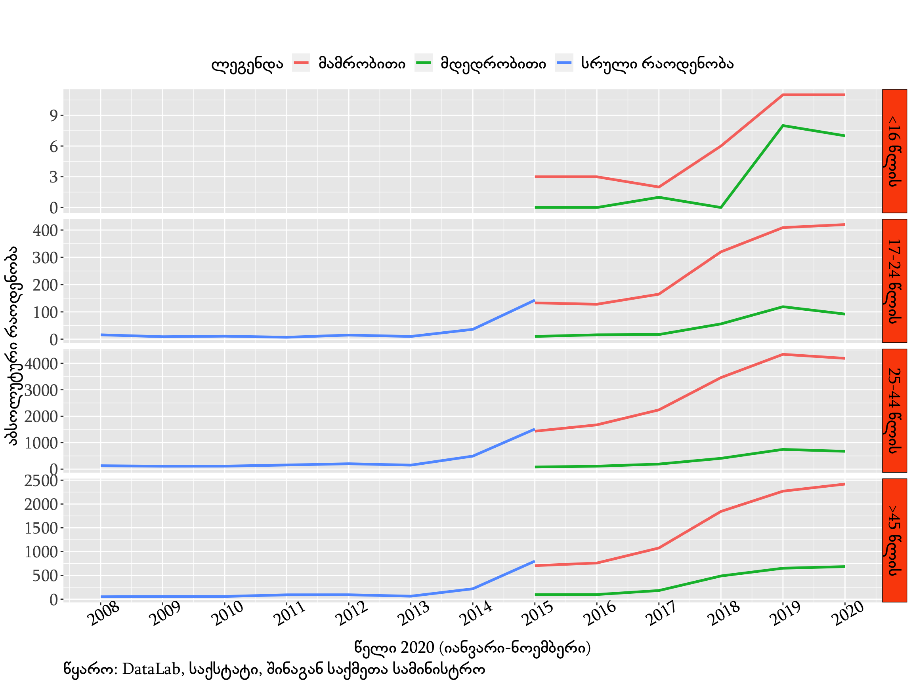

დიაგრამა 1. რეგისტრირებული დანაშაული წლების მიხედვით
დიაგრამა 1. რეგისტრირებული დანაშაული წლების მიხედვითმართლმსაჯულების სფეროში ელექტრონული მმართველობის, მათ შორის შემთხვევების მართვის/საქმისწარმოების ელექტრონული სისტემების (Case Management System) განვითარების შედეგად, დიდი რაოდენობით ადმინისტრაციული მონაცემები გახდა ხელმისაწვდომი. მიუხედავად იმისა, რომ ადმინისტრაციული მონაცემების/ჩანაწერების შექმნის თავდაპირველ მიზანს არ წარმოადგენს პოლიტიკის ანალიზი და სოციალური მოვლენის შესწავლა, მისი გამოყენება აქტიურად მიმდინარეობს კვლევებისთვისა და სამოქმედო გეგმით გათვალისწინებული აქტივობების შეფასებებისათვის. ელექტრონული ჩანაწერების გამოყენებას მნიშვნელოვანი უპირატესობა (ინფორმაციის შეგროვებისათვის მცირე ბიუჯეტი) აქვს, ინფორმაციის შეგროვების სხვა საშუალებებთან, მათ შორის გამოკითხვა და საყოველთაო აღწერა, შედარებით.
უწყებათაშორისი თანამშრომლობის მემორანდუმის საფუძველზე 2010 წლის მაისიდან საქსტატი ყოველთვიურად აქვეყნებს სისხლის სამართლის სტატისტიკას, რომელსაც იღებს 5 უწყებიდან:
საქსტატის ოფიციალურ ვებსაიტზე მონაცემების უმეტესობა .PDF გაფართოებითა არის განთავსებული, რაც ართულებს საჯაროდ გამოქვეყნებული, ცხრილების დამუშავებასა და ანალიზს. თუმცა ინფორმაციის გარკვეული ნაწილი ხელმისაწვდომია ანალიზისთვის შედარებით მოსახერხებელი ფორმატით (.xls).
მონაცემებზე დაყრდნობით დანაშაულთა დაკავშირებით (რეგისტრირებული დანაშაული, სასჯელი, დაზარალებული) განსხვავებული ინფორმაციის მიღება არის შესაძლებელი.
ერთ-ერთი ცხრილი იძლევა შესაძლებლობას დააკვირდეთ რეგისტრირებული დანაშაულის რაოდენობის ცვლილებას წლების მიხედვით 2001 წლიდან.
დიაგრამა 1. რეგისტრირებული დანაშაული წლების მიხედვით
საქსტატის გამოქვეყნებული მონაცემების გამოყენებით, ასევე შესაძლებელია 2015 წლიდან სისხლის სამართლის თავების მიხედვით რეგისტრირებულ დანაშაულზე დაკვირვება, მათ შორის დანაშაული სიცოცხლის, საკუთრების წინააღმდეგ, დანაშაული ოჯახისა და არასრულწლოვნის წინააღმდეგ.
დიაგრამა 2. რეგისტრირებული დანაშაული სისხლის სამართლის თავების მიხედვითდამატებით, შინაგან საქმეთა სამინისტრო თავის ოფიციალურ ვებსაიტზე პერიოდულად აქვეყნებს რეგისტრირებულ დანაშაულთან დაკავშირებულ სხვადასხვა სტატისტიკას. ინფორმაცია ქვეყნდება განსხვავებული გაფართოებით .pptx, .pdf, .xlsx
რამდენიმე ინფორმაცია tidy ფორმატით არის გამოქვეყნებული, რომლის ამარტივებს მის დამუშავებასა და იძლევა მონაცემების განსხვავებული ანალიზის შესაძლებლობას(ცვლადების განსხვავებული კომბინაციით). მსგავსი ფორმატითა არის ხელმისაწვდომი თვითმკვლელობისა და თვითმკვლელობის მცდელობის შესახებ ინფორმაცია (მწკრივები: ასაკი, სქესი, მოქალაქეობა, რეგიონი).
 დიაგრამა 3. თვითმკვლელობისა და თვითმკვლელობის მცდელობის რაოდენობა
2018 წელს ინფორმაციის თავისუფლების განვითარების ინსტიტუტის (IDFI) მიერ ადმინისტრაციული მონაცემების ხელმისაწვდომობისა და მათი გამოყენების გაზრდის მიზნით ღია მონაცემთა ლაბორატორია - DataLab შეიქმნა. DataLab-ზე არსებული ცხრილების ნაწილის წყარო სხვადასხვა უწყებების ოფიციალურ ვებსაიტებზე არსებული მონაცემებია. IDFI პლატფორმაზე ინფორმაციას აქვეყნებს .xls .csv გაფართოებით (საჯარო .pdf გაფართოებით გამოქვეყნებული მონაცემები გარდაქმნის აღნიშნულ გაფართოებებში).
ამჟამად DataLab-ზე ხელმისაწვდომია დანაშაულის სტატისტიკის 66 ცხრილი, მათ შორის ხელმისაწვდომი მონაცემების ნაწილის გამოყენებით შესაძლებელია მოძალადის (ოჯახში ძალადობა) ასაკობრივი პროფილის შესწავლა 2008-დან 2018 წლამდე.
 დიაგრამა 4. ოჯახში ძალადობის ფაქტების ჩამდენთა (მოძალადეთა) რაოდენობა
საქმისწარმოების ელექტრონული სისტემების განვითარება პერმანენტულად მიმდინარეობს (მონაცემთა ბაზები). აღსანიშნავია, რომ ახალი კორონავირუსის (COVID-19) პანდემიის გავრცელებისა და დისტანციური მუშაობის აუცილებლობამ ელექტრონულ სისტემებზე მოთხოვნა გაზარდა და შესაბამისად მათი უფრო სწრაფად განვითარების საჭიროება დადგა. აღნიშნული პროცესი ხელს უწყობს ელექტრონულად ინფორმაციაზე ხელმისაწვდომობის ზრდას. ადმინისტრაციული მონაცემების წვდომასთან ერთად აქტუალური საკითხია მისი შენახვა, გამოქვეყნების ფორმა, რომელიც მონაცემების ანალიზისთვის, მანქანური დამუშავებისათვის მოსახერხებელი უნდა იყოს.